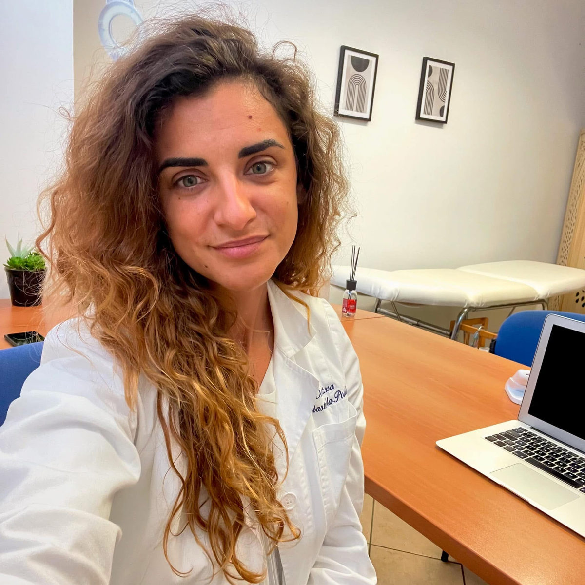
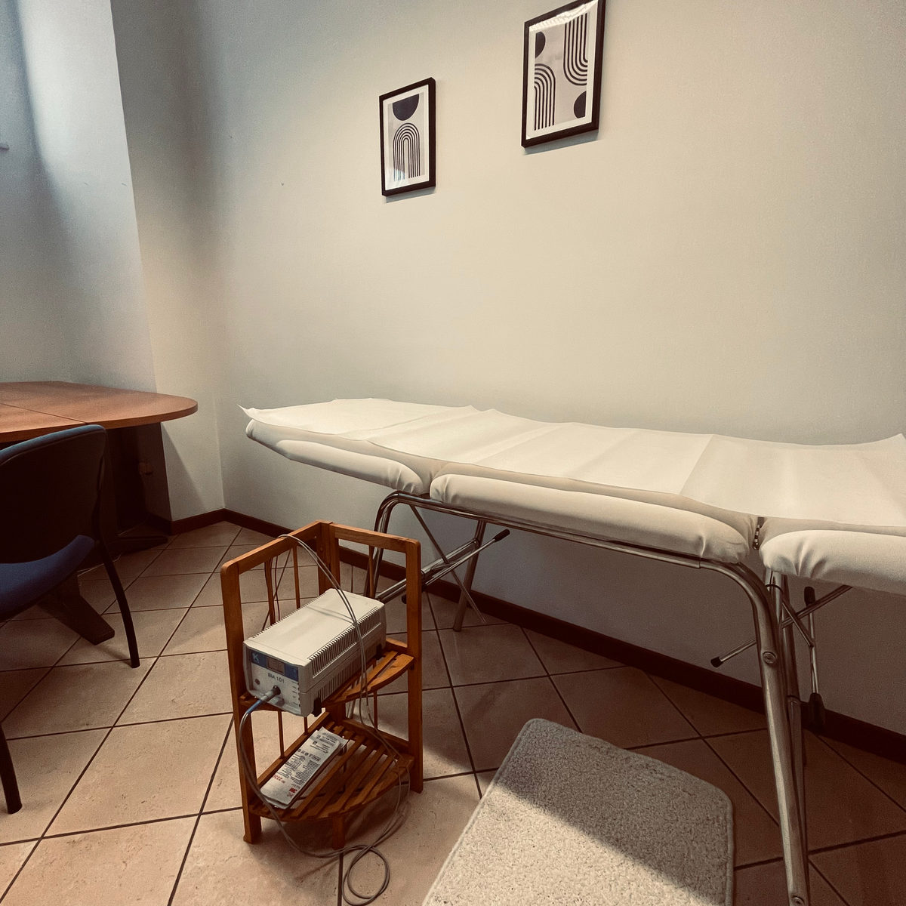

Online o in studio
Sono tre modi di lavorare insieme: il percorso Equilibrium solo online, le classiche visite in presenza a Voghera e a Sementina, oppure il percorso ibrido che unisce le due cose.
Il percorso Equilibrium
Un affiancamento completo, ovunque tu sia.
- Videochiamata di avvio e una videochiamata al mese
- Chat WhatsApp diretta con me per tutto il percorso
- Community WhatsApp con consigli e ricette ogni settimana
- Il tuo spazio privato con piano, ricette, menu, guide e i 4 moduli
- Lavoro su fame e sazietà e fame emotiva con esercizi pratici
Visite in presenza
Le classiche visite individuali, a tu per tu, a Voghera o a Sementina.
- Prima visita con anamnesi e valutazione della composizione corporea
- La tua cassetta degli attrezzi: una vera e propria cassetta in cui peschi ogni volta che vuoi gli attrezzi che ti servono per crearti un pasto, secondo le tue esigenze di quel momento in termini di gusto, tempo, voglia o non voglia di cucinare
- Visite di controllo in studio
Supporto via WhatsApp one-to-one quotidiano, accesso alla community e lavoro attivo sull'ascolto di fame-sazietà, fame emotiva, distacco dalla bilancia pesa-alimenti e gestione della socialità fanno parte solo del percorso Equilibrium.
Percorso ibrido
L'affiancamento dell'online e le visite che si fanno in presenza anziché in videochiamata.
- Supporto via WhatsApp one-to-one quotidiano
- Community, challenge e il tuo spazio privato con tutti i materiali
- Visite di controllo in studio, a Voghera o a Sementina, al posto della videochiamata
- Lavoro su fame e sazietà, fame emotiva e distacco dalla bilancia pesa-alimenti
Online: il percorso Equilibrium
Equilibrium si può svolgere interamente online, quindi puoi seguirlo da casa, dall'ufficio o dall'altra parte del mondo. Seguo persone in tutta Italia, in Svizzera e anche oltreoceano.
Tra una videochiamata e l'altra ci sentiamo su WhatsApp, nella community trovi ogni settimana consigli e ricette, e nel tuo spazio privato hai sempre a portata di mano piano, menu e guide.
Il primo passo è la videochiamata conoscitiva gratuita.

Voghera (PV)
Via Verdi 46, 27058 Voghera (PV)
Qui ricevo per le visite individuali in presenza: prima visita, piano alimentare personalizzato e visite di controllo.
Per prenotare una visita puoi chiamarmi o scrivermi al +39 331 489 4470.

Sementina, Bellinzona (CH)
Via Pobbia 24, Sementina
In Svizzera ricevo a Sementina, alle porte di Bellinzona, per le visite individuali in presenza: prima visita, piano alimentare personalizzato e visite di controllo.
Per prenotare una visita puoi chiamarmi o scrivermi al +41 76 530 10 92.

Online o in studio, scegli tu
Per il percorso online Equilibrium prenota la videochiamata conoscitiva gratuita. Per una visita in studio chiamami o scrivimi.